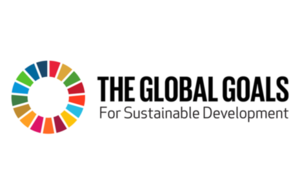

On 25 September 2015, the United Nations will adopt 17 Global Goals
to end extreme poverty and build a better world by 2030.
But what are they?

The Global Goals will be adopted by 193 world leaders at the UN’s annual
General Assembly – the main gathering of the United Nations.
These new goals build on the progress of the Millennium Development Goals (MDGs)
set in 2000 – which have helped to halve poverty and improve living standards
around
the world over the past 15 years.
The aim of the Global Goals – also called the Sustainable Development Goals –
is to finish the job of the MDGs over the next 15 years.
The Global Goals in full
Goal 1: End poverty in all its forms everywhere
Goal 2: End hunger, achieve food security and improved nutrition and promote sustainable agriculture
Goal 3: Ensure healthy lives and promote well-being for all at all ages
Goal 4: Ensure inclusive and equitable quality education and promote lifelong learning opportunities for all
Goal 5: Achieve gender equality and empower all women and girls
Goal 6: Ensure availability and sustainable management of water and sanitation for all
Goal 7: Ensure access to affordable, reliable, sustainable and modern energy for all
Goal 8: Promote sustained, inclusive and sustainable economic growth, full and productive employment and decent work for all
Goal 9: Build resilient infrastructure, promote inclusive and sustainable industrialization and foster innovation
Goal 10: Reduce inequality within and among countries
Goal 11: Make cities and human settlements inclusive, safe, resilient and sustainable
Goal 12: Ensure sustainable consumption and production patterns
Goal 13: Take urgent action to combat climate change and its impacts
Goal 14: Conserve and sustainably use the oceans, seas and marine resources for sustainable development
Goal 15: Protect, restore and promote sustainable use of terrestrial ecosystems, sustainably manage forests, combat desertification, and halt and reverse land degradation and halt biodiversity loss
Goal 16: Promote peaceful and inclusive societies for sustainable development, provide access to justice for all and build effective, accountable and inclusive institutions at all levels
Goal 17: Strengthen the means of implementation and revitalize the global partnership for sustainable development